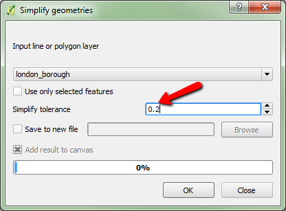

Overview
In this lab, we will create a choropleth map using GeoJSON data.
Please submit your assignment via Dropbox on D2L according to the requirements in the Deliverables section at the bottom.
Due: 11:59 pm, Wednesday, 10/12 (I extended the deadline so you have two weeks)
Set up basemap
- Before you start, create a new file folder (e.g., lab3) for this lab.
- If you need to download the leaflet files, download the zip folder from here.
- Open your html editor (e.g., Atom) and add the following lines to set up the basemap using the Mapbox light canvas.
Note you may need to modify the red part if you want to use relative url to point to the leaflet files stored in a different folder. And replace the access token (Check the instructions if in doubt).
<!DOCTYPE html> <html> <head> <title>Lab 3</title> <link rel="stylesheet" href="leaflet.css" /> <script src="leaflet.js"></script> </head> <body> <div id="map" style="height: 550px; "></div> <script type="text/javascript"> var map = L.map('map').setView([51.48,-0.07], 10); L.tileLayer('https://api.tiles.mapbox.com/v4/{id}/{z}/{x}/{y}.png?access_token={accessToken}', { attribution: 'Map data © <a href="http://openstreetmap.org">OpenStreetMap</a> contributors, <a href="http://creativecommons.org/licenses/by-sa/2.0/">CC-BY-SA</a>, Imagery © <a href="http://mapbox.com">Mapbox</a>', maxZoom: 11, minZoom: 5, id: 'mapbox.light', accessToken: 'your mapbox public access token' }).addTo(map); </script> </body> </html>Then, save the document asmap3.htmlin your lab3 folder. Please remember to specify the file extension as .html to make it work. If you did everything right, your map should look like:
Yep, we will map London this time! You will get the London Boroughs shapefile below.
Prepare and add GeoJSON layer
In Lab 2, we have introduced how to add markers to your map manually using their geographic coordinates. But you may wish to work with more complex spatial features as in a desktop GIS. So we introduce GeoJSON, which is a format for encoding a variety of geographic data structures (http://geojson.org).
- Getting Data: click here to download the shapefile used in this lab (You are welcome to use your own data).
- Unzip the data to your desired directory.
- Launch QGIS Desktop (available in both BBH242 and BBH252; It is open source and cross-platform so you can download it and install QGIS on your own computer) and go to Layer (top menu bar) > Add Layer > Add Vector Layer (I use QGIS 2.14. If you have a newer or older version QGIS, the menu organization may be different). Then browse to the directory where you have unzipped the shapefile and select the london_borough.shp file to open it in QGIS. The shapefile also contains three fields in their attribute table: NAME, pop_den (population density), and per_indian (percent Indian population). You can take a look by right-clicking the layer name and select Open Attribute Table.
- To maximize the rendering speed, there are two imporant steps we should always perform in QGIS before exporting a shapefile to GeoJSON: (1) simplify geometry; and (2) delete unwanted fields in the attribute table. For your convenience, I have already deleted the unrelevant fields. But you still need to simplify the geometry, please follow the step below:
In QGIS, go to Vector > Geometry Tools > Simplify Geometries, use london_borough as Input. For the Simplify tolerance, the unit is the same as the unit of the reference system (In our case, the unit is meter). Vertices are removed if the distance with the tentative simplified line is smaller than the tolerance. Therefore, higher tolerance values would generate simpler features (smaller file size) but also lose some details. Let's use 0.2 here (see image below).
 - Click OK to run. Once the process is complete, you will see a dialog window telling you how many vertices have been eliminated.
- Next, in the Layers panel of QGIS, right-click the layer and select Save As.... In the dialog window, set Format to GeoJSON, click Browse to save output file to your lab data folder (any name you like), and be sure to set the CRS to EPSG:4326 - WGS 84 (see image below). Then click OK to save the GeoJSON file. Then close QGIS (no need to save anything).

- Use Atom to open the GeoJSON file (similar to open an HTML document). Place the following at the very beginning of the GeoJSON document (see image below):
var data =
- Save the changed GeoJSON as
data.jsto your lab working folder (where your html file is saved). Note the file extension is.js.
Here is a copy of the (data.js) file I created. - Return to your HTML document. In the
headsection, include the following line so that we can usedata.jsfor mapping:<script type="text/javascript" src="data.js"></script> - Then, in
scriptsection (insidebody), include the following to add the data.L.geoJson(data).addTo(map);
The GeoJSON data layer is now added to the map! Take a look at the sample code if needed.
Add colors
- Now, we will color the London Boroughs according to their population density. Remember the orignal shapefile contains three fields: NAME, pop_den, and per_indian. The population density data will come from the
pop_den. - For choosing colors, Leaflet recommends ColorBrewer, where you can pick a color scheme and get the HTML color codes for the different colors. Let's use the 5-class Purples (For Question 2, you will use a different one):

- Once we have the color codes, we need to create a function that returns a color based on population density values. Place the following lines above the line of
L.geoJson):function getColor(value) { return value > 139 ? '#54278f': value > 87 ? '#756bb1': value > 53 ? '#9e9ac8': value > 32 ? '#cbc9e2': '#f2f0f7'; }
In the above lines, the blue colored numbers are the break values that are used to classify the population density (in people/hectare) of the different London Boroughs. Try to classify your data in QGIS or ArcGIS may help determine the break values. Here, I usedNatural Breaksas the classification method. You may have noticed the color codes are used as well.
Let's try to take a close look at the fuction: if the value (population density) is greater than 139 people/hectare, the darkest purple (#54278f) will be used. If the value is less than 139 but greater than 87, use the second dark purple (#756bb1), and so forth. The question mark?and colon:are used together to create a conditional statement (We will talk about this on Monday).
It is okay if you cannot fully understand this. If you use your own data, you will just need to replace the break values and colors. You can, of course, add or remove classes. Please follow the syntax carefully. - Following the
getColorfunction, we define another function for the GeoJSON layer so that itsfillColordepends onfeature.properties.pop_denproperty:function style(feature){ return { fillColor: getColor(feature.properties.pop_den), weight: 2, opacity: 1, color: 'gray', fillOpacity: 0.9 }; }Note the pop_den is the field name for the population density values.
For the function attributes, you may be able to tell what they do by their names, e.g.,fillColoris to define the fillcolor of the features,weightis to define the weight of the boundary lines, etc. You may try to customize the appearance by adjusting the corresponding values. - To make the functions work, we have to modify the line of
L.geoJsonto:L.geoJson(data, {style:style}).addTo(map);
Please make sure the two functions are defined aboveL.geoJson.
Now we have a map with colors (sample code) !
Add legend
- Next, we will add legend to the map. In the
headsection of your html document, place the following lines to define the appearance of the legend (see the comment lines in red for explanations):<style> /* Change the values below to adjust the appearance of the legend */ .legend { padding: 6px 8px; line-height: 18px; background: rgba(255,255,255,0.9); box-shadow: 0 0 15px rgba(0,0,0,0.2); border-radius: 5px; } /* Change the values below to adjust the appearance of the legend color boxes */ .legend i { width: 18px; height: 18px; float: left; margin-right: 8px; opacity: 0.7; } </style> - Next, in the
scriptsection ofbody, add the following lines belowL.geoJsonto define how the legend will be created in your map (see the comment lines in red for explanation):var legend = L.control({position: 'bottomright'}); // Try the other three corners if you like. legend.onAdd = function (map) { var div = L.DomUtil.create('div', 'legend'), grades = [0, 32, 53, 87, 139]; // The break values to define the intervals of population, note we begin from 0 here div.innerHTML = '<b>Population Density <br> 2011 <br></b>'; // The legend title, in this case it's Population Density 2011 // Loop through our the classes and generate a label with a colored square for each interval. // If you are creating a similar choropleth map, you do not need to change lines below. for (var i = 0; i < grades.length; i++) { div.innerHTML += '<i style="background:' + getColor(grades[i] + 1) + '"></i>' + grades[i] + (grades[i + 1] ? '–' + grades[i + 1] + '<br>' : '+'); } return div; }; legend.addTo(map);The above functions for defining the legend may be too much for you to understand. But you can simply replace some small portions according to the comment lines when you answer question 3 or make your own maps.
The legend will be created at the bottom right corner of your map with the defined styles and content:
Deliverables (Back to Top )
Please turn in a separate html file for each question below via Dropbox on D2L. There will be three in total. You don't have to turn in the leaflet files as I will have them on my computer.
- Question 1: Submit the html file you have just completed by following along the instructions (9 pts).
- Question 2: Save the html file as
color.html. Modify the code to use a different color scheme (Hint: You will need to modify the color code used in thegetColorfunction) (6 pts). - Question 3: Save the html file as
indian.html. Modify the code to make another choropleth map with theper_indian(% Indian Population) field. For the break values, use 20, 15, 7.5, 3 (again, 5 classes) (Hint: You will need to modify the break values used in thegetColorfunction, then field name used forfillColorwithin thestylefunction.) Please also remember to change the legend portion to reflect the percent Indian population data. ) (10 pts).